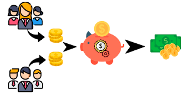
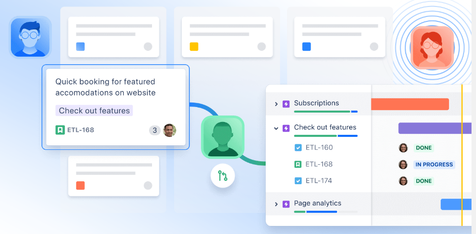

Nombre del grupo: Alphacoders
Integrantes:
Mavel Sterling
Scrum Master
Juan Felipe Osorio Zapata
Product Owner
Juan Diego Gil
Desarrollador FrontEnd
Alejandro Mosquera
Analista QA
Danilo Arevalo
Analista Base de datos
Descripción del grupo:
Alphacoders es un grupo de programadores que se encargan de brindar productos de desarrollo de software a la memdia, a tavés de la codificación y desarrollo en aplicaciones web, aplicaciones móviles y aplicaciones de escritorio.
Con el propósito de brindar a nuestros clientes la máxima calidad posible reflejado en el cumplimiento de los estandares que requieren nuestros clientes, Alphacoders destaca por la entrega de resultados en las fechas planeadas, el incremento del producto de software, y las modificaciones necesarias según la necesidad del cliente.

Objetivos del grupo:
El objetivo del grupo es desarrollar una aplicación de fondos de ahorros de pensiones FAP,
Descripción de la aplicación:
La aplicación que se va a desarrollar es una aplicación web que se encargará de gestionar los fondos y los ahorros de las diferentes personas que se registran dentro del aplicativo web.
Descripción de las funcionalidades:
Las funcionalidades que tendrá la aplicación son:
- Funcionalidad 1: Gestión de Fondos
- Funcionalidad 2: Gestión de Ahorros
- Funcionalidad 2: Gestión de Usuarios
- Funcionalidad 3: Gestión de información de los Usuarios
Descripción de las tecnologías:
Las tecnologías que se van a utilizar son:
- Tecnología 1: JavaScript - Vue JS (Frontend)
- Tecnología 2: Python - Django (Backend)
- Tecnología 3: PostgreSQL
- Tecnología 4: Python - Selenium
Descripción de las herramientas:
Las herramientas que se van a utilizar son:
- Herramienta 1: Visual Studio Code
- Herramienta 2: PostgreSql PgAdmin
- Herramienta 3: GitHub
- Herramienta 4: Jira
- Herramienta 5: Whatsapp 
Descripción de los roles:
Los roles que se van a utilizar son:
- Role 1: Developer Backend - Frontend
- Role 2: Scrum Master
- Role 3: Product Owner
- Role 4: Tester QA
- Role 5: Stakeholder
Descripción de las tareas:
Las tareas que se van a realizar son:
- Tarea 1: Diseño de la aplicación
- Tarea 2: Desarrollo de la aplicación
- Tarea 3: Pruebas de la aplicación
- Tarea 4: Documentación de la aplicación
- Tarea 5: Implementación de la aplicación